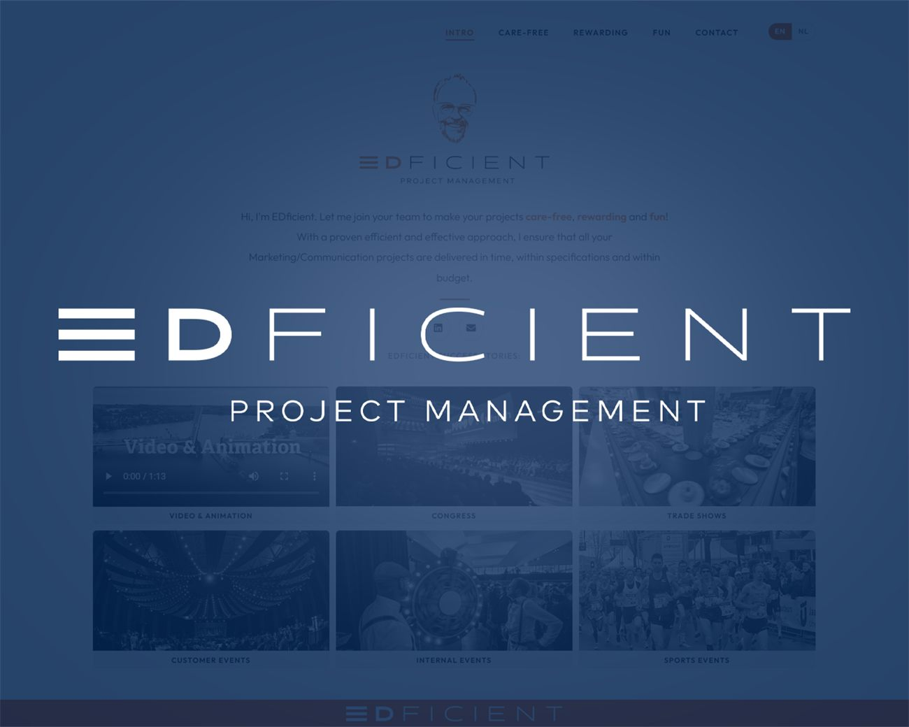

Website voor een
zzp'er of consultant
Voor EDficient, freelance projectmanager in marketing en communicatie, maakten we de website en de branding. In dit artikel lees je wat een zzp'er, interim-manager of consultant echt nodig heeft van een website, en wat je gerust kunt weglaten.

Als zelfstandige in zakelijke dienstverlening krijg je de meeste opdrachten via je netwerk. Toch zoekt bijna elke opdrachtgever je even op voordat hij belt. Wat hij dan vindt, bepaalt mee of dat telefoontje er komt. Een LinkedIn-profiel is een begin, maar een eigen site laat zien dat je een bedrijf bent en niet iemand tussen twee banen.
Over EDficient
EDficient is het bedrijf van een freelance projectmanager voor marketing- en communicatieprojecten. Denk aan congressen, beurzen, klantenevenementen en video- en animatieproducties, waarbij hij tijdelijk aansluit bij het team van de opdrachtgever. Zijn belofte bestaat uit drie woorden: zorgeloos, resultaatgericht en met plezier.
Wat we gebouwd hebben
We maakten de website en de branding. De site bestaat bewust uit één pagina. Een opdrachtgever die een projectmanager zoekt, wil in een minuut weten wie je bent, wat je doet en of je het eerder gedaan hebt.
- Een persoonlijke opening. De site begint met "Hoi, ik ben EDficient" en in twee zinnen wat hij voor een team betekent.
- Drie pijlers. Zorgeloos, resultaatgericht en plezier hebben elk een eigen blok, in dezelfde volgorde als het menu.
- Succesverhalen. Eerder werk per soort project, met beeld en video: congressen, beurzen, klantenevenementen, interne evenementen en sportevenementen.
- Een kort formulier. Naam, e-mail en bericht onder de kop "Laten we kennismaken".
De klant zei erover: "Brand-On dacht met mij mee in plaats van alleen een opdracht uit te voeren. Binnen twee weken stond er een site waar we trots op zijn, en als er iets is, hebben we zo iemand aan de lijn."
Wat heeft een zzp'er nodig van een website?
Eén pagina is vaak genoeg
Je hoeft geen tien pagina's te vullen. Voor een freelancer met één duidelijke dienst werkt een goede onepager beter dan een site met lege subpagina's. Wat erop moet: wie je bent, wat je doet, voor wie, bewijs dat je het kunt en hoe iemand je bereikt.
Bewijs boven beloftes
Elke consultant noemt zichzelf resultaatgericht. Het verschil maak je met voorbeelden: projecten die je geleid hebt, opdrachtgevers die je mag noemen, een citaat van iemand met wie je gewerkt hebt. Mag je namen niet noemen, beschrijf dan het soort project en de omvang.
Jezelf laten zien
Een opdrachtgever huurt jou in, geen bureau. Een goede foto en teksten in je eigen toon doen meer dan zakelijke standaardzinnen. Schrijf zoals je in een kennismakingsgesprek praat.
Een eigen domein en e-mailadres
Een offerte vanaf een eigen domein komt anders binnen dan een vanaf een gratis mailadres. Het kost weinig en hoort bij de basis, net als een site die veilig en snel is. Bij ons zit de hosting en het onderhoud in het pakket, zodat je er zelf geen omkijken naar hebt.
Vindbaar op je eigen naam
Je hoeft niet bovenaan te staan op "projectmanager". Je wilt wel dat iemand die jouw naam of bedrijfsnaam intikt, direct op je eigen site uitkomt en niet op een oud profiel of een naamgenoot. Dat regel je met een eigen site, een Google Bedrijfsprofiel en een link vanaf je LinkedIn.
Wat kost het?
Voor de meeste zzp'ers is het Starter pakket van 750 euro ruim voldoende: een complete site tot vijf pagina's, inclusief een jaar hosting en support. Wil je ook een logo en huisstijl, dan komt daar 250 euro bij. Een uitgebreid overzicht van wat een site kost en waarom, staat in onze prijsgids.
Ook een eigen website als zelfstandige?
Brand-On is een webdesignstudio uit Purmerend, met onze ontwerper in Limmen. We werken voor zzp'ers en mkb-bedrijven in heel Noord-Holland en daarbuiten. Bekijk ons werk op de projectenpagina, of vraag een gratis demo aan. Dan bouwen we vrijblijvend een eerste versie van jouw site.
Website voor een zzp'er of consultant
Heb ik als zzp'er een website nodig als ik al LinkedIn heb?
LinkedIn is een goed begin, maar een eigen site laat zien dat je een bedrijf voert. Opdrachtgevers zoeken je op voordat ze bellen, en op je eigen site bepaal je zelf wat ze als eerste zien.
Is één pagina genoeg voor een freelancer of consultant?
Vaak wel. Voor EDficient bouwden we een onepager met een persoonlijke opening, drie pijlers, succesverhalen en een contactformulier. Heb je meerdere diensten of wil je bloggen, dan zijn losse pagina's handiger.
Hoe snel kan mijn website live staan?
De site van EDficient stond binnen twee weken live. Hoe snel het bij jou gaat, hangt vooral af van hoe snel teksten en beeld beschikbaar zijn.
Wat kost een website voor een zzp'er?
Het Starter pakket kost 750 euro en bevat een complete website tot vijf pagina's met een jaar hosting en support. Je kunt eerst een gratis demo aanvragen, zodat je vooraf ziet wat je krijgt.
Gerelateerde artikelen
Laten we jouw bedrijf
aanzetten.
Benieuwd hoe jouw site eruit kan zien? Vraag een gratis demo aan, helemaal vrijblijvend. Je krijgt binnen één werkdag een persoonlijk antwoord.